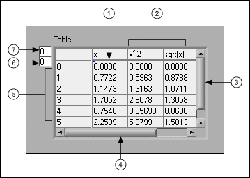
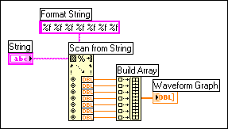

Open example�
Open example�
 Find related examples
Find related examples
A string is a sequence of displayable or non-displayable ASCII characters. Strings provide a platform-independent format for information and data. Some of the more common applications of strings include the following:
On the front panel, strings appear as tables, text entry boxes, and labels. LabVIEW includes built-in VIs and functions you can use to manipulate strings, including formatting strings, parsing strings, and other editing.
Refer to the ASCII Codes topic for more information about ASCII codes and conversion functions.
Use the string controls and indicators as text entry boxes and labels.
Right-click a string control or indicator on the front panel to select from the display types shown in the following table. You also can right-click a string control or indicator and select Visible Items�Display Style from the shortcut menu to display a glyph on the object that indicates the display type. The table also shows an example message in each display type.
| Type Glyph | Display Type | Description | Message |
|---|---|---|---|
| n | Normal Display | Displays printable characters using the font of the control. Non-displayable characters generally appear as boxes. | There are four display types. \ is a backslash. |
| \ | �\� Codes Display | Displays backslash codes for all non-displayable characters. | There\sare\sfour\sdisplay\stypes.\n\\\sis\sa\sbackslash. |
| P | Password Display | Displays an asterisk (*) for each character including spaces. | **************************** ***************** |
| * | Hex Display | Displays the ASCII value of each character in hex instead of the character itself. | 5468 6572 6520 6172 6520 666F 7572 2064 6973 706C 6179 2074 7970 6573 2E0A 5C20 6973 2061 2062 6163 6B73 6C61 7368 2E |
Use the table control to create a table on the front panel. Each cell in a table is a string, and each cell resides in a column and a row. Therefore, a table is a display for a 2D array of strings.
The following illustration shows a table and all its parts.

| 1 | Cell indicated by index values |
| 2 | Column headings |
| 3 | Vertical scroll bar |
| 4 | Horizontal scroll bar |
| 5 | Row headings |
| 6 | Horizontal index |
| 7 | Vertical index |
Use the String functions to edit strings in ways similar to the following:
Refer to the LabVIEW Style Checklist for more tips on minimizing memory usage when editing strings programmatically. Refer to the labview\examples\Strings\Strings.lvproj for examples of using the String functions to edit strings.
Open example�
Find related examples
To use data in another VI, function, or application, you often must convert the data to a string and then format the string in a way that the VI, function, or application can read. For example, Microsoft Excel expects strings that include delimiters, such as tabs, commas, or blank spaces. Excel uses the delimiter to segregate numbers or words into cells.
For example, to write a 1D array of numeric values to a spreadsheet using the Write to Text File function, you must format the array into a string and separate each numeric with a delimiter, such as a tab. You can use the Write Delimited Spreadsheet VI to format the array into a string and insert delimiters.
Use the String functions to perform tasks similar to the following:
Use the File I/O VIs and functions to save strings to text and spreadsheet files.
In many cases, you must enter one or more format specifiers in the format string parameter of a String function to format a string. A format specifier is a code that indicates how to convert numeric data to or from a string. LabVIEW uses conversion codes to determine the textual format of the parameter. For example, a format specifier of %x converts a hex integer to or from a string.
The Format Into String and Scan From String functions can use multiple format specifiers in the format string input, one for each input or output to the expandable function.
The Array To Spreadsheet String and Spreadsheet String To Array functions use only one format specifier in the format string input because these functions have only one input to convert. LabVIEW treats any extra specifiers you insert into these functions as literal strings with no special meaning.
Numeric data and string data differ because string data is ASCII characters and numeric data is not. Text and spreadsheet files accept strings only. To write numeric data to a text or spreadsheet file, you must first convert the numeric data to a string.
To add a set of numeric values to an existing string, convert the numeric data to a string and use the Concatenate Strings or another String function to add the new string to the existing string. Use the String/Number Conversion functions to convert numeric values to strings.
A string can include a set of numeric values you display in a graph or chart. For example, you can read a text file that includes a set of numeric values that you want to plot to a chart. However, those numeric values are in ASCII text, so you must read the numeric values as a string and then format the string into a set of numeric values before you plot the numeric values to a chart.
The following block diagram shows a string that includes a set of numeric values, converts the string to numeric values, builds an array of numeric values, and plots the numeric values to a graph.

Use the String Functions to search strings for characters, words, phrases, or numbers with regular expressions. You can use regular expressions to search for literal strings in the text, such as the word "cat", or search for strings in the text that match a particular pattern, such as words that begin with the letter "c" and end with the letter "t" or substrings that start with a letter followed by one or more digits.
Use the Match Pattern function and the Search and Replace Pattern VI to search strings by entering literal strings or special characters in the regular expression input. Use the Search and Replace String function to search for and replace text in a string.
Use the Match Regular Expression function and the Search and Replace String function for more complex regular pattern matching using standard Perl Compatible Regular Expression (PCRE) syntax. Right-click the Search and Replace String function and select Regular Expression from the shortcut menu to configure the function for advanced regular expression searches and partial match substitution in the replacement string. Resize the Match Regular Expression function to view any partial matches found in the string. You can use the Match Pattern function or the Match Regular Expression function to search strings for regular expressions. The Match Regular Expression function gives you more options for matching strings but performs more slowly than the Match Pattern function.
Regular expression support is provided by the PCRE library package. Refer to the <National Instruments>\_Legal Information directory for more information about the license under which the PCRE library package is redistributed.
Refer to the PCRE library package at www.pcre.org for more information about Perl Compatible Regular Expressions.